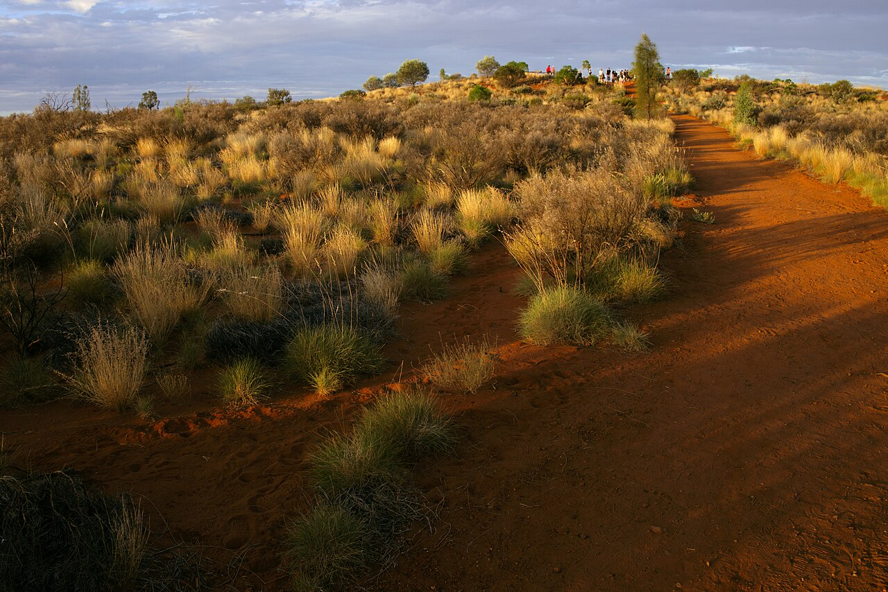

Uluṟu and Kata Tjuṯa · 5-day family itinerary
One Ayers Rock Resort base, three park days on one three-day pass, and every walk started early enough to finish before the park’s 11 am hot-weather line.

Photo: Querent, Climb to Imalung Lookout, Yulara, CC BY 4.0, via Wikimedia Commons.

Checked before you commit
This illustrative route keeps four nights at Ayers Rock Resort in Yulara, flies in and out of Ayers Rock (Connellan) Airport, and uses a hire car for the park. Walks sit in the early morning because Parks Australia closes named tracks from 11 am on hot days, and the three park days line up with one three-day adult pass. Park hours, pass prices and closure rules were checked against Parks Australia’s own pages on 14 October 2026. Nothing was booked.
One base, no second hotel. Uluṟu is about 20 minutes’ drive from the resort and Kata Tjuṯa about 45 minutes, so they get separate mornings. Arrival and departure days stay outside the park, which keeps the three-day pass on Days 2–4.
One early walk a day, back at the resort before the hot afternoon. The park advises avoiding walks between 2.30 pm and 6.30 pm in hot weather and finishing by 11 am. Day 3 is the light, indoor-friendly day that can swap with Day 4 if the forecast shifts.
Flights, resort rooms and hire cars were not checked for your dates, and the park notes rental cars in Yulara are limited. Nothing on this page makes or holds a booking: it does not buy a park pass, hold a car or reserve a room. Any booking is completed with the airline, the resort, the hire company or Parks Australia, or through a partner.
Planning boundary: dates are illustrative. The worked example runs Monday 26 to Friday 30 October 2026, when the park is open 5.00 am to 8.00 pm. Check the alerts on Parks Australia’s Uluṟu site before each park day. Alfred does not read the park’s heat-closure rules or a weather forecast while it writes the day. Book opens a partner checkout. It does not prove a booking exists. Uluṟu is not one of the destination guides in the signed-in app.
Route and family-coordination brief
Party: two adults and school-age children. Base: four nights at Ayers Rock Resort in Yulara, which sits outside the national park, about 10 minutes’ drive from the entry station. Pace: moderate, one hard morning anchor a day. Budget input: Mid Range. The only prices stated here are the ones Parks Australia publishes.
Getting there: Parks Australia lists direct flights to Ayers Rock (Connellan) Airport, code AYQ, from Sydney (about 3 hours), Melbourne (2 hours 40 minutes), Brisbane (3 hours 15 minutes) and Cairns (2 hours 50 minutes), with Virgin Australia, Qantas and Jetstar. Ayers Rock Resort says complimentary AAT Kings coach transfers meet all commercial flights for resort hotel guests, with no booking needed. Return coaches leave the hotel about two hours before your flight.
Getting around: there are no taxis or public transport in the park. Parks Australia suggests a hire car from the airport or Yulara, an organised tour, or a hop-on hop-off bus pass. All park roads are sealed and fine for a 2WD. Approximate drives from the resort are 20 minutes to Uluṟu, 30 minutes to Talinguṟu Nyakunytjaku (sunrise) and 45 minutes to Kata Tjuṯa.
The pass and the clock: every adult needs a park pass, $38 for three days or $50 annual. Children and teenagers under 18 go free. Buy online, then scan the QR code in the left-hand lane at the entry station. Pass dates can be changed before your visit. In hot weather, the Valley of the Winds closes beyond Karu Lookout from 11 am when the forecast or actual temperature reaches 36°C. The north-east section of the base walk closes from 11 am, and the Lungkaṯa walk from 2 pm, at 40°C or more. On 14 October 2026 the Bureau of Meteorology’s Yulara forecast already showed 36–37°C for 19–20 October, so treat late October as a heat-rule month.
Day 1 — Fly into AYQ and keep the park pass unstarted
Fly into Ayers Rock (Connellan) Airport and collect bags. If you’re staying at Ayers Rock Resort, follow the hotel transfer signs to the AAT Kings coach outside the terminal. Pick up the hire car here if you’ve booked one. Parks Australia warns rental cars are limited in Yulara and suggests booking a few weeks ahead.
Check in and stock up on water and snacks for the walk days. The resort’s free shuttle runs between the accommodation and the Yulara town square. Keep this as a no-park day so the three-day pass covers Days 2–4. Set alarms for an early start tomorrow.
Fallback: if the flight is late, nothing on the park side is lost. The pass hasn’t started and no walk is waiting.
Live-check: flight times; hire-car pick-up hours at the airport; whether you need an accessible transfer coach (the resort asks you to tell reservations ahead, as not all coaches are wheelchair accessible).
Day 2 — Ranger-guided Mala walk at 8 am, Muṯitjulu Waterhole before the heat
Leave the resort by about 7.15 am for the 20-minute drive and the entry station. From October to April, the free ranger-guided Mala walk leaves the Mala walk carpark at 8.00 am. It is an easy 2 km return walk along the base of Uluṟu to Kaṉtju Gorge, about 1 hour 30 minutes, and wheelchair accessible. Rangers talk about rock art, Aṉangu tools and the Tjukurpa (creation stories) along the way.
Then drive round to the Kuniya carpark for the short Kuniya walk to Muṯitjulu Waterhole, 1 km return and 30–45 minutes. It is one of the few permanent water sources around Uluṟu and one of the shadier spots. Be back at the resort before lunch for the pool and a rest.
Come back for sunset at the car sunset viewing area. Aṉangu ask visitors not to photograph the north-east face of Uluṟu. Parks Australia suggests sunset shots, when shadows fall over that side. October closing time is 8.00 pm, so leave with time to reach the gate.
Fallback: if you miss the 8 am start, follow the Mala walk’s information signs as a self-guided walk. Skip the full 10.6 km base walk with children. On a 40°C day the north-east section closes from 11 am anyway.
Live-check: Bureau of Meteorology Yulara forecast the night before; park alerts; at least one litre of water per person per hour, hats and sunscreen.
Day 3 — Talinguṟu Nyakunytjaku sunrise, then the Cultural Centre
The park opens at 5.00 am in October. Talinguṟu Nyakunytjaku is the main sunrise viewing area, about 30 minutes’ drive from the resort, with toilets on site. Take breakfast in the car and watch the light change on Uluṟu.
Drive to the Cultural Centre, 13 km into the park and about 5 minutes from the base of Uluṟu. It opens at 7.00 am. The park recommends stopping here to learn about Aṉangu country and culture. The visitor guide lists a cultural presentation at 11.30 am every day. Ininti Cafe there sells fly nets, which are worth having for the Kata Tjuṯa morning. Parks Australia says dot-painting workshops are run by Muṯitjulu community-owned businesses Ininti Cafe and Walkatjara Arts, so ask at the desk whether one is on.
Use the afternoon for the resort pool and an early night. Swimming in the park’s waterholes isn’t permitted. This is the light day, kept that way on purpose.
Fallback: if tomorrow’s forecast is hotter than today’s, swap Days 3 and 4 and do Kata Tjuṯa today. The Cultural Centre is the better choice for the hotter day.
Live-check: Cultural Centre hours (Parks Australia’s opening-hours page lists 7.00 am to 5.45 pm); presentation time on the day; sunrise time for your date, which Parks Australia points to on the Ayers Rock Resort website.
Day 4 — Kata Tjuṯa early, Karu Lookout finished well before 11 am
Leave around 6.00 am for the 45-minute drive to Kata Tjuṯa. Walk the Valley of the Winds to Karu Lookout: Grade 3, 2.2 km return, about 1 hour, with loose rock in places. Drinking water is at the start of the track, but there are no toilets on it. The only toilets at Kata Tjuṯa are at the sunset viewing area, so stop there first.
Only confident older walkers should go further. Karingaṉa Lookout is 5.4 km return and about 2.5 hours. The full 7.4 km circuit takes 3–4 hours, and both are Grade 4. On a day forecast at 36°C or more, the track beyond Karu closes from 11 am. Plan to finish by then, not just to start before it.
The Valley of the Winds is a culturally sensitive men’s area. Aṉangu ask that you don’t photograph or film the rock formations along this walk. Photos of plants, animals and people are welcome. Back at the resort by early afternoon.
Fallback: if the morning runs late or the heat is building, stop at Karu Lookout and turn back. Leave the longer loop for a cooler trip. If you’d rather skip the Valley of the Winds, Waḻpa Gorge (Grade 3, 2.6 km return, about 1 hour) is the other short walk at Kata Tjuṯa. Do it in the cool of the morning too.
Live-check: Yulara forecast and park alerts before you leave; the park map marks no phone service out here, so download it first; leave the Kata Tjuṯa area 45 minutes before park closing.
Day 5 — A resort morning and the coach back to AYQ
The three-day pass covered Days 2–4, so today stays inside Yulara: pack, swim, and return the hire car if you have one. Ask reception for the exact time of the airport coach. The resort says return transfers leave the hotel about two hours before your flight.
If someone wants one more sunrise in the park, decide before you buy the pass. Either move the three pass days to Days 3–5, or check whether the $50 annual adult pass suits you better. Don’t assume a three-day pass stretches to a fourth.
Fallback: with an early flight, skip everything optional and be ready for the coach. The airport is about 10 minutes from the resort.
Live-check: coach departure time at reception; airline check-in cut-off; hire-car return location and hours.
Planning notes
Dates are illustrative. At decision time, recheck park opening hours for your month, hot-weather track closures, park alerts, pass prices, flights, resort transfers and hire-car availability. A travelling profile is required. On web Lets Go, Holiday takes origin, destination, dates, a budget step and a day pace, then Plan my trip queues the itinerary. Pick Day pace with care here. Slow fills only an afternoon activity slot, while Moderate fills a morning and an afternoon slot, with lunch and dinner. On a hot-weather route, the walk belongs in the morning. The Estimated costs bar, when it appears, is a rounded median of flight-and-hotel packages, not a park pass. While the trip is still Planning, you can keep or change the hotel and then the flights Alfred picked. Once it is ACTIVE, it can be viewed, edited and shared. You can edit an item’s title, times and notes by hand, so “Karu Lookout, finish by 11 am on a 36°C day” can sit on the card. Hey Alfred can swap two full days after you confirm, such as Day 3 and Day 4, but not a day with a flight. Book opens a partner checkout. It does not buy a park pass. Uluṟu is not one of the destination guides in the signed-in app.
Planning remote Australia with young children? See K’gari from Hervey Bay, a five-day family itinerary with a ferry, a guided 4WD day and a dingo-safety rule.
Plan a trip
Start with your people, dates and pace, then review the editable plan before booking.
Plan a trip